一、Python开发环境配置
1、Python语言概述
1.1 Python:译为“蟒蛇”
1.2
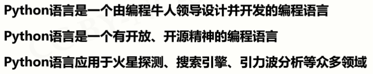
2、Python基本开发环境IDLE
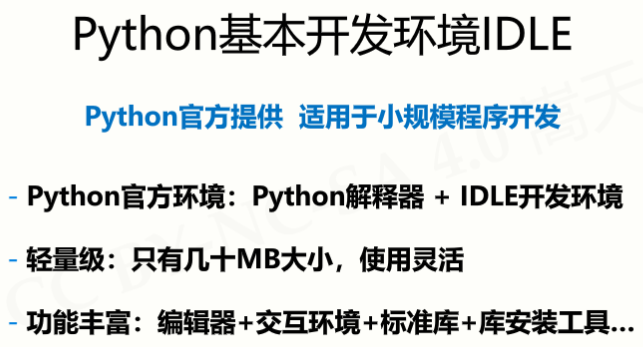
3、Python程序编写与运行
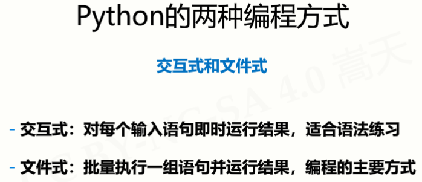
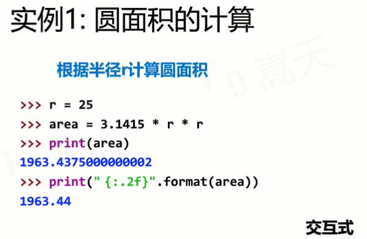 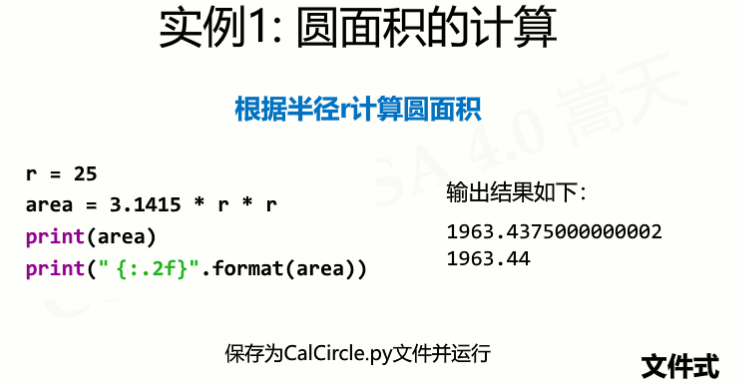
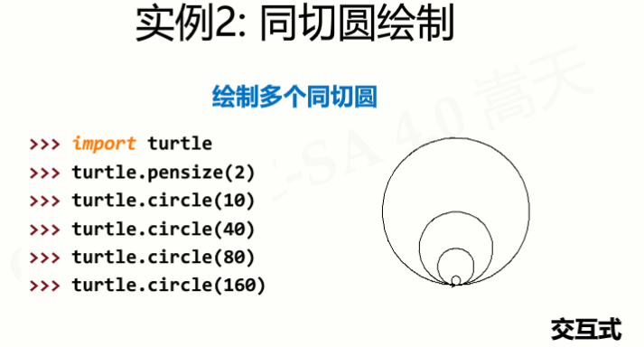 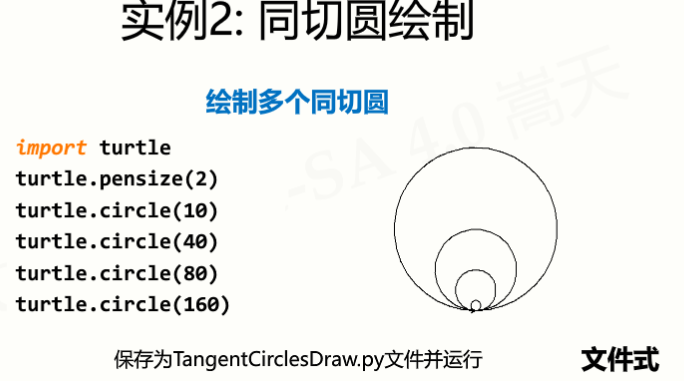
4、Python高级开发环境VSCode
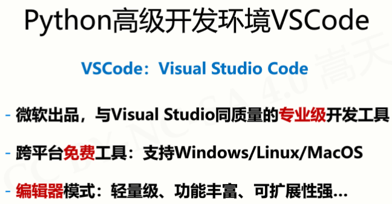
二、程序的格式框架
3.1 代码高亮：编程的色彩辅助体系，不是语法要求
3.2 缩进
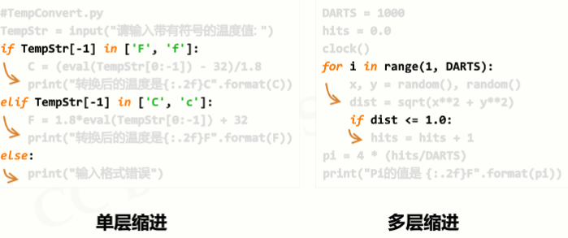
3.3 注释：用于提高代码可读性的辅助性文字，不被执行
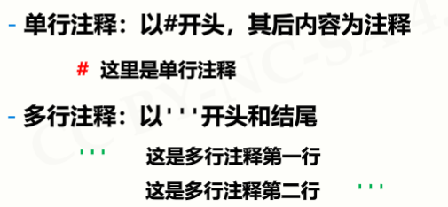
3.4 命名与保留字
3.4.1 变量：用来保存和表示数据的占位符号
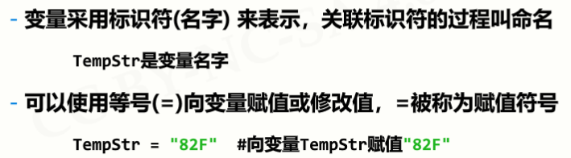
3.4.2 命名
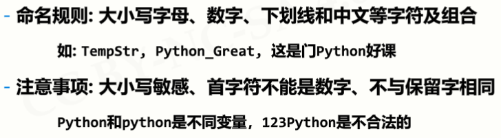
3.4.3 保留字：被编程语言内部定义并保留使用的标识符
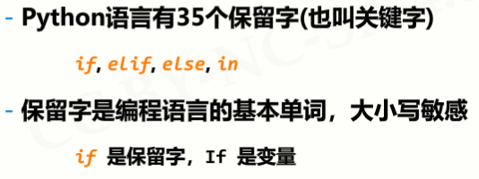
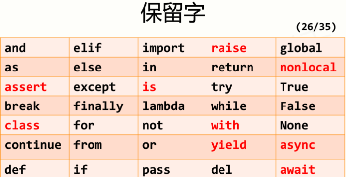
注：标记为红色的保留字不常用
3.5 数据类型：字符串、整数、浮点数、列表
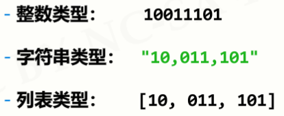
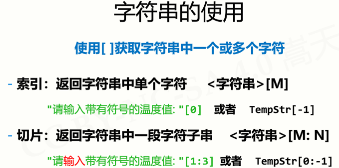
3.6 语句与函数
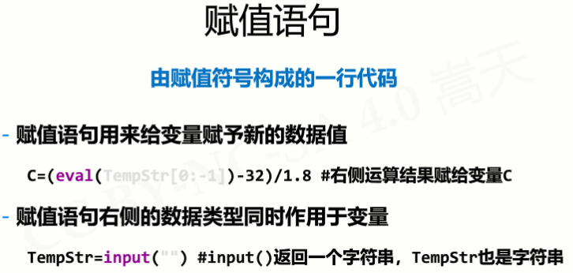
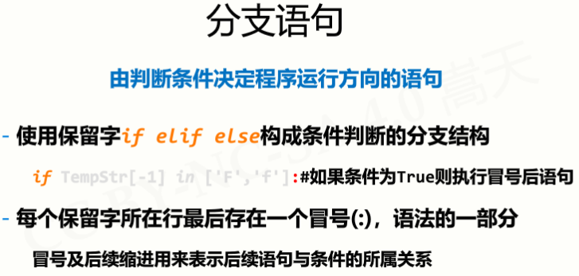
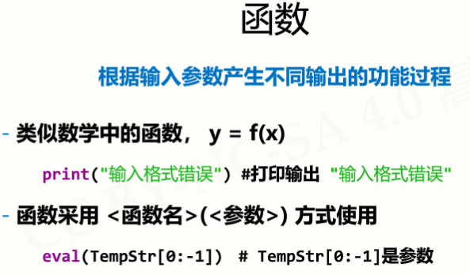
例如评估函数：
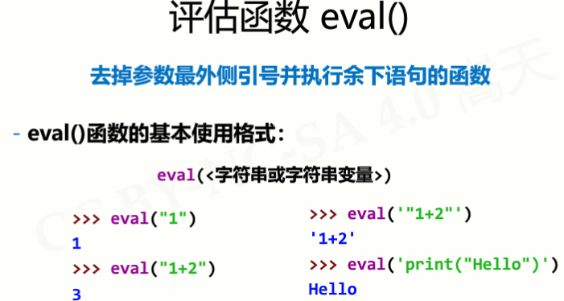
3.7 Python程序的输入输出
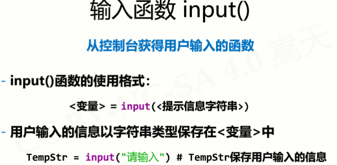
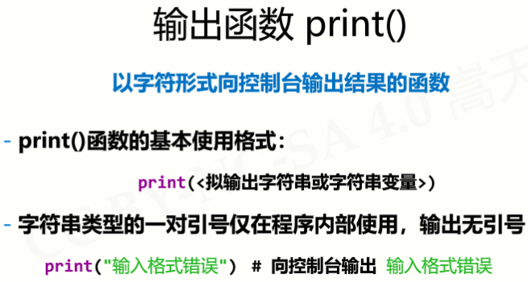
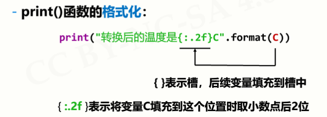
三、课堂小案例
1、实例1：华氏度与摄氏度温度转换
1.1 设计算法
转换算法如下：（C表示摄氏度、F表示华氏度）
C = ( F - 32 ) / 1.8
F = C * 1.8 + 32
1.2 设计要求
(1) 输入输出的摄氏度可采用大小写字母C结尾，温度可以是整数或小数，如：12.34C指摄氏度12.34度；
(2) 输入输出的华氏度可采用大小写字母F结尾，温度可以是整数或小数，如：87.65F指华氏度87.65度；
(3) 输出保留小数点后两位，输入格式错误时，输出提示：输入格式错误；
(4) 使用input()获得测试用例输入时，不要增加提示字符串。
1.3 输入示例：
示例1：12.34C
示例2：87.65F
输出示例：
示例1：54.21F
示例2：30.92C
1.4 源码如下：
TempStr = input()
if TempStr[-1] in ['F', 'f']:
C = (eval(TempStr[0:-1]) - 32)/1.8
print("{:.2f}C".format(C))
elif TempStr[-1] in ['C', 'c']:
F = 1.8*eval(TempStr[0:-1]) + 32
print("{:.2f}F".format(F))
else:
print("输入格式错误")运行结果：
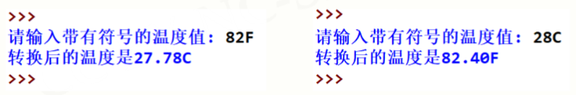
1.5 举一反三
(1) 输入：
示例1：C12.34
示例2：F87.65
输出：
示例1：F54.21
示例2：C30.92
（2）源码如下：
TempStr = input()
if TempStr[0] in ['F']:
C = (eval(TempStr[1:]) - 32)/1.8
print("C{:.2f}".format(C))
elif TempStr[0] in ['C']:
F = 1.8*eval(TempStr[1:]) + 32
print("F{:.2f}".format(F))
else:
print("输入格式错误")